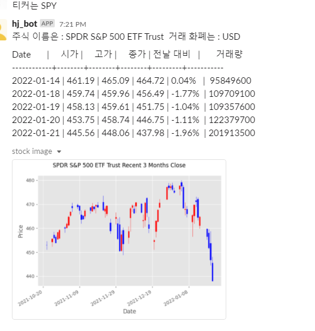

AWS Lambda 슬랙 주가봇 만들기

# -*- coding:utf-8 -*-
import json
import yfinance as yf
import pandas as pd
import matplotlib.pyplot as plt
from mpl_finance import candlestick_ohlc
import matplotlib.dates as mpl_dates
from slack_sdk import WebClient
from tabulate import tabulate
import os
client = WebClient(token="토큰 코드")
response = {"isBase64Encoded": True, "statusCode": 200, "headers": {"X-Slack-No-Retry": 1}, "body": ""}
def lambda_handler(event, context):
try:
if int(event['headers']['x-slack-retry-num']) > 0:
return response
except:
pass
slack_body = event.get("body")
slack_event = json.loads(slack_body)
ch = slack_event['event']['channel']
txt = slack_event['event']['text']
if "challenge" in slack_event:
return {
'statusCode': 200,
'body': slack_event.get("challenge")
}
if txt.startswith('티커는'):
ticker=txt[4:]
pd.options.display.float_format = '{:.2f}'.format
#원하는 주식의 내용들을 가져오기
data=yf.Ticker(f'{ticker}')
if len(data.info) < 5:
#잘못 입력할 경우
client.chat_postMessage(channel = ch, text= "티커를 확인해주세요", as_user=True)
else:
#y finance info 내용들 중 필요한 정보
stock_name = data.info['longName']
stock_currency=data.info['currency']
#3mo는 그래프로 만들고 1mo는 잘라서 텍스트 그래프로 사용
data_3mo = yf.download(tickers=f'{ticker}',period="3mo").set_axis(['시가','고가','저가','종가','조정 종가','거래량'],axis=1,inplace=False)
data_1mo = yf.download(tickers=f'{ticker}',period="1mo").set_axis(['시가','고가','저가','종가','조정 종가','거래량'],axis=1,inplace=False)
data_1mo=data_1mo.reset_index(drop=False)
#strftime 처리 안 하면 시간까지 출력돼서 잘라내기
data_1mo['Date'] = data_1mo['Date'].dt.strftime('%Y-%m-%d')
#dataframe에서 전날 대비 계산하려고 한 칸씩 내리기
data_1mo['전날']=data_1mo['조정 종가'].shift(1)
#퍼센트 타입으로 표기 .2는 소수점 둘째자리까지
data_1mo['전날 대비'] = ((data_1mo['조정 종가']-data_1mo['전날'])/data_1mo['전날']).apply('{:.2%}'.format)
#끝의 5일치만 보여주기
data_5d=data_1mo[-5:].reset_index(drop=True)
data_5d = data_5d.loc[:,['Date','시가','고가','종가','전날 대비','거래량']]
#슬랙에 보내기
text_graph= tabulate(data_5d, headers ='keys', tablefmt='presto', showindex=False)
client.chat_postMessage(channel = ch, text= "주식 이름은 : "+ f'{stock_name}'+" 거래 화폐는 : "+f'{stock_currency}', as_user=True)
client.chat_postMessage(channel = ch, text= text_graph, as_user=True)
#3개월치 캔들스틱
#캔들스틱으로 만들기 위한 준비
plt.style.use('ggplot')
chart_data = data_3mo.reset_index(drop=False)
ohlc = chart_data.loc[:, ['Date', '시가', '고가', '저가', '종가']]
ohlc['Date'] = pd.to_datetime(ohlc['Date'])
ohlc['Date'] = ohlc['Date'].apply(mpl_dates.date2num)
ohlc = ohlc.astype(float)
# 표 만들기 - 상승은 빨간색, 하강은 파랑색
fig, ax = plt.subplots()
candlestick_ohlc(ax, ohlc.values, width=0.6, colorup='red', colordown='blue', alpha=1)
# 레이블과 제목
ax.set_xlabel('Date')
ax.set_ylabel('Price')
fig.suptitle(f'{stock_name}'+" Recent 3 Months Close")
# date 표기 처리 및 표 최대로 키우기
date_format = mpl_dates.DateFormatter('%Y-%m-%d')
ax.xaxis.set_major_formatter(date_format)
fig.autofmt_xdate()
fig.tight_layout()
# labmda tmp에 저장하고 슬랙에 보내기
os.chdir('/tmp')
plt.savefig("stock_image.png")
client.files_upload(file="stock_image.png",channels=ch)